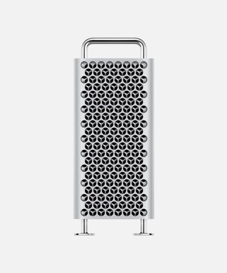
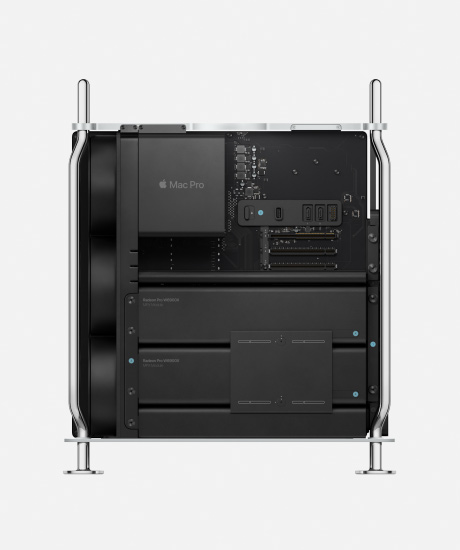

Mac Pro
Power to change everything. Say hello to a Mac that is extreme in every way. With the greatest performance, expansion, and configurability yet, it is a system created to let a wide range of professionals push the limits of what is possible.
View the Mac Pro Technology White Paper (PDF)


All-new design
Function defines form. Every aspect of Mac Pro is designed in pursuit of performance. Built around a stainless steel space frame, an aluminum housing lifts off, allowing 360‑degree access to every component and vast configuration. From there anything is possible.
Learn more about the design of Mac Pro